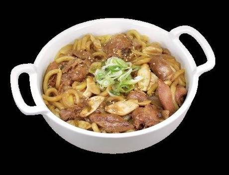
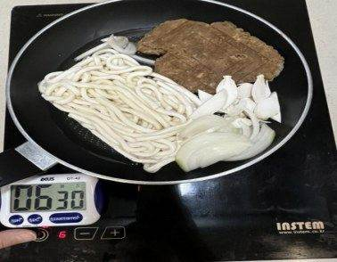
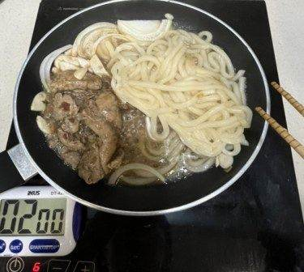
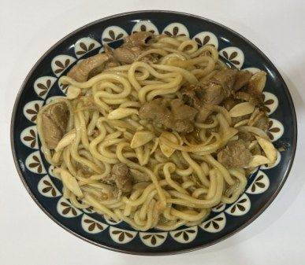
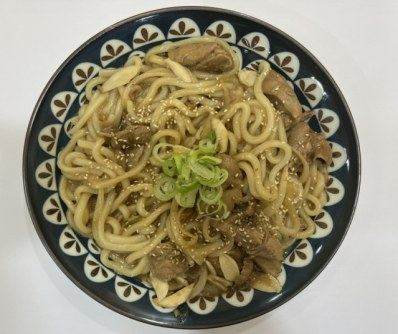
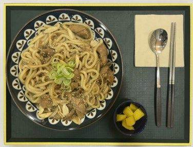

| 메뉴명 | 안동찜닭우동 |
|---|---|
| 판매가격 | 8,900원 |
| 원재료 | 아이센스만능순살찜닭원팩, 양파, 미니새송이, 우동사리, 간장, 대파, 깨 |
| 사용 부자재 | 덮밥접시, 소스볼 |
| 메뉴특징 | 진한 간장소스와 매콤함을 살짝 더한 감칠맛이 느껴지는 순살찜닭우동 |





벌툰 음료 레시피
냉동 우동면을 억지로 풀려고 하면 면이 끊어질 수 있으므로 조리 시 주의한다.